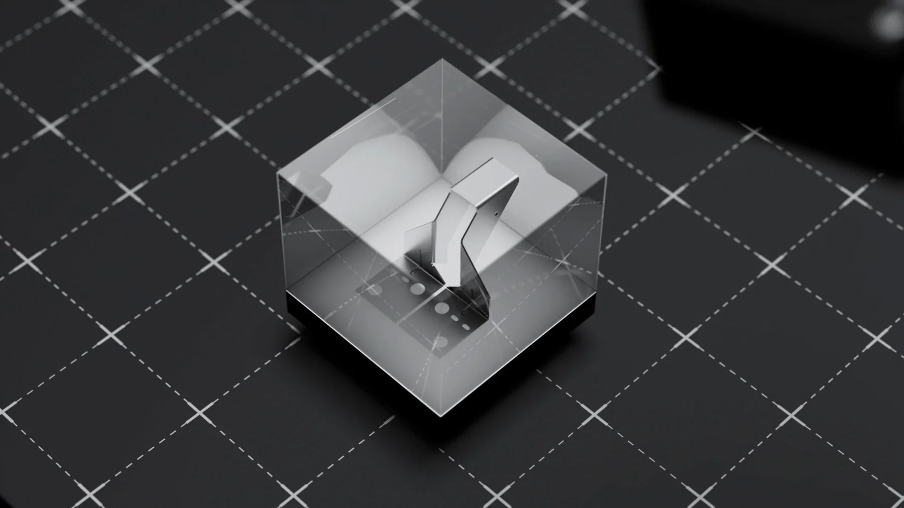

Học đồ hoạ 3D từ con số 0: ba tháng đầu nên làm gì

Người mới thường hỏi nên học phần mềm nào. Câu hỏi đó ít quan trọng hơn bạn nghĩ. Ba tháng đầu quyết định bạn ở lại hay bỏ cuộc, và nó phụ thuộc vào thứ tự học chứ không phải công cụ.
Chọn phần mềm trong năm phút
Nếu bạn bắt đầu từ con số 0 và tự trả tiền cho mọi thứ, chọn Blender. Miễn phí, chạy được trên máy phổ thông, làm được cả model, dựng cảnh, ánh sáng, hoạt hình và hậu kỳ trong một chỗ. Khi đi làm cần phần mềm khác, bạn học thêm trong vài tuần vì nguyên lý giống nhau.
Máy móc cũng vậy, đừng nâng cấp vội. Mình đã viết riêng về cấu hình máy học Blender và khi nào máy thật sự là thứ đang cản bạn.
Tháng đầu: làm quen và giữ nhịp
Mục tiêu tháng này không phải làm ra hình đẹp. Là ngồi xuống đều đặn và không sợ phần mềm nữa.
- Thao tác cơ bản: xoay cảnh, di chuyển, phóng to, chọn đối tượng, lưu file cho gọn.
- Model khối đơn giản: cái ly, cái loa, cái điều khiển. Vật gì trên bàn cũng được.
- Một nguồn sáng duy nhất: tập nhìn bóng đổ trước khi nghĩ tới ba đèn.
- Nhịp luyện: bốn tới năm buổi mỗi tuần, mỗi buổi một tiếng, hơn hẳn ngồi tám tiếng vào chủ nhật.
Tháng hai: ánh sáng và vật liệu
Đây là chỗ hình của bạn bắt đầu khác người mới khác. Đa số người tự học nhảy vào vật liệu phức tạp quá sớm, trong khi thứ quyết định cảm giác của khung hình là ánh sáng.
- Dựng lại cùng một vật với ba kiểu sáng khác nhau, so sánh cảm giác từng bản.
- Học đủ vật liệu cơ bản: kim loại, nhựa, kính, gỗ. Chưa cần node phức tạp.
- Chụp ảnh tham khảo ngoài đời rồi bắt chước đúng kiểu sáng đó.
Tháng ba: làm cho xong một sản phẩm
Tháng này bạn chọn một vật, làm trọn vẹn từ model tới hình cuối, và bắt mình kết thúc nó. Làm xong một thứ tử tế dạy bạn nhiều hơn mười thứ dở dang. Tới đây mà thấy cần người soi bài, bài khoá học Blender 3D cho người mới liệt kê những gì một khoá nền phải có.
- Chọn vật bạn có trong nhà, chụp ảnh tham khảo từ nhiều góc.
- Dựng khối thô, chốt bố cục và góc máy trước khi làm chi tiết.
- Làm vật liệu, đặt sáng, render thử ở chất lượng thấp cho nhanh.
- Hậu kỳ nhẹ tay, xuất hai ba tỉ lệ khung.
- Đăng công khai một chỗ nào đó và nhận nhận xét, kể cả nhận xét khó nghe.
Ba tháng đầu không phải để giỏi. Là để biết mình có chịu nổi việc ngồi sửa một khung hình tới lần thứ mười lăm hay không.
Những thứ chưa cần trong ba tháng đầu
- Hoạt hình nhân vật. Một nhánh riêng, học sau khi vững cảnh tĩnh.
- Mô phỏng vật lý, khói lửa, vải. Vui nhưng không giúp bạn kiếm việc sớm.
- Sưu tầm add on. Cài mười add on không bằng hiểu một nguyên lý ánh sáng.
- Nâng cấp máy. Để tiền đó cho lúc thật sự bị render chặn đường.
Dấu hiệu bạn đang đi đúng
Sau ba tháng, bạn nên nhìn lại bài tháng đầu và thấy nó xấu. Đó là dấu hiệu tốt nhất, vì mắt bạn đã đi trước tay. Ngược lại, nếu bài cũ vẫn thấy ổn, nhiều khả năng bạn đang xem nhiều mà làm ít.
Dấu hiệu tốt thứ hai là bạn bắt đầu nhìn ánh sáng ngoài đời theo kiểu khác: để ý nguồn sáng trong quán cà phê, bóng đổ trên vỉa hè. Nghề này bắt đầu từ chỗ đó.
Đến lúc bạn có vài bài nộp mà vẫn không tự biết bài nào yếu ở đâu, hình thức học kèm 1 kèm 1 Blender là bước hợp lý tiếp theo, vì giai đoạn này cái thiếu là người chẩn đoán chứ không phải thêm bài giảng.
Nếu muốn đi theo lộ trình có người chữa bài thay vì tự mò, xem khoá học Blender 3D của LXAM Academy. Còn nếu muốn tự học trước, tải cẩm nang miễn phí và đọc học Blender bao lâu thì nhận job đầu tiên.
Đọc tiếp
Muốn được sửa bài trực tiếp?
Coaching 1:1 online, đồng hành trọn một năm. Để lại thông tin, tôi xem qua và tư vấn bạn nên bắt đầu từ đâu.
Đăng ký tư vấn